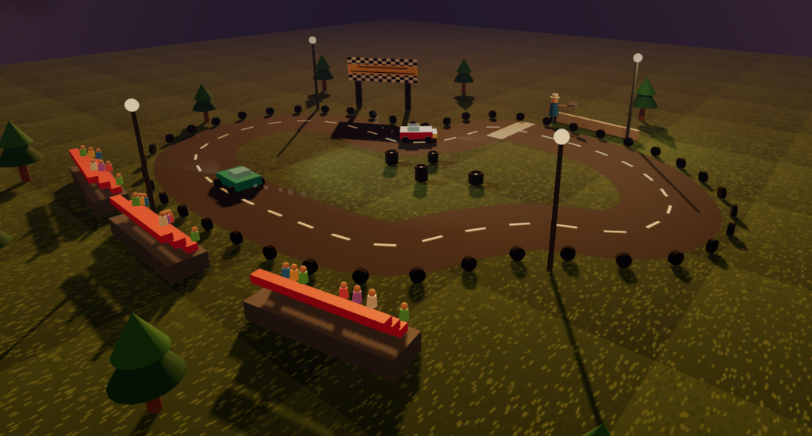
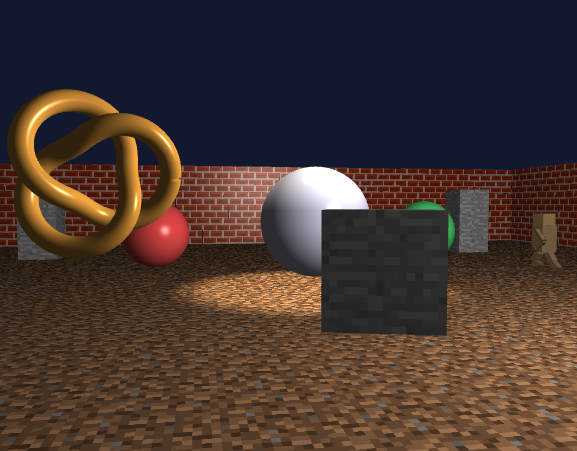

Mahir Camci · GitHub

Animated 3D racing environment with Three.js. Shadow mapping, particle rain, spline-based car animation, and GLTF model loading.

Custom WebGL engine with GLSL shaders implementing Phong illumination, dynamic spotlights, normal matrices, and OBJ parsing.
First-person camera, texture mapping, gravity and collision physics, block placement.
Hierarchical 3D modeling with matrix stacks, articulated joints, and procedural animation.
WebGL shape renderer with OOP classes, color sliders, and a hand-drawn triangle character.
Canvas sandbox for testing 2D vector operations — addition, normalization, cross products.